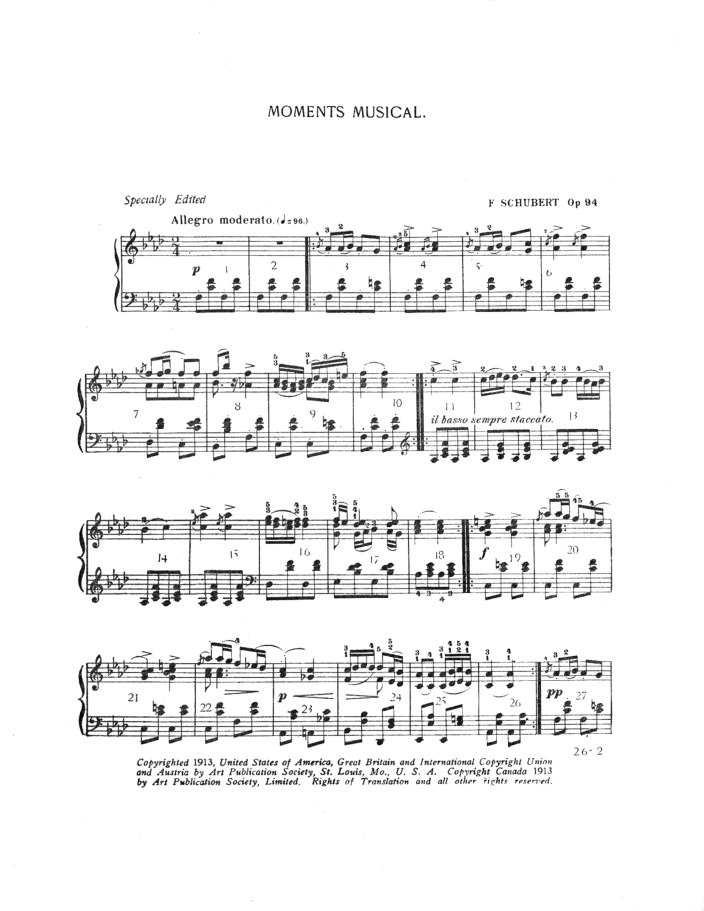
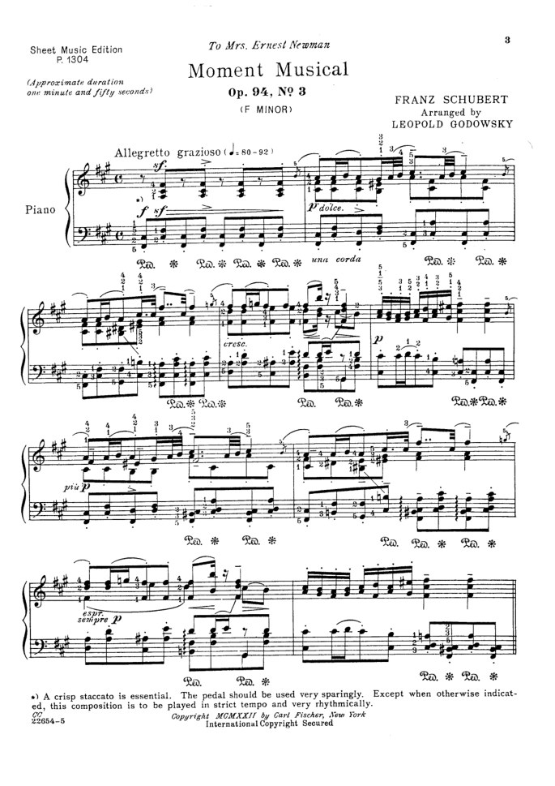
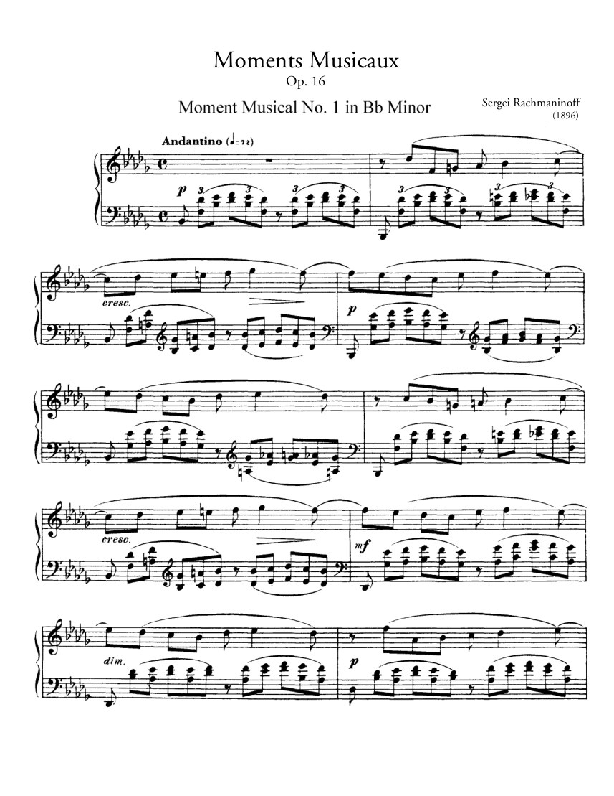

ORIGINAL · F. SCHUBERT
악흥의 순간 제3번

Art Publication Society · 1913

연주 시간은 참고 녹음·출판사 자료를 바탕으로 표기한 대략의 길이로, 반복·템포·편곡에 따라 달라질 수 있음. 나이는 표기한 작곡·개작 시점의 작곡가 만 나이.

프란츠 슈베르트 · 1797.1.31–1828.11.19

피아니스트 박종해 · 1분클래식
코랄을 닮은 화음으로 시작해, 노래하듯 흐르는 선율과 다양한 장식음으로 이어지는 곡. 공연 팸플릿은 Mozart와 초기 Beethoven의 영향, 그리고 Schubert 특유의 서정성이 함께 드러나는 작품으로 소개. 중간부의 화성 변화와 첫 선율이 돌아올 때 달라지는 반주가 감상 포인트.
1815년 빈에서 아버지의 학교에서 교사로 일하고 Antonio Salieri에게 작곡을 배우던 시기에 작곡. 18세 Schubert가 성악뿐 아니라 기악에서도 자신만의 표현을 탐색하던 때의 작품.
완성된 첫 판본과 개작 도중 단편으로 남은 두 번째 판본이 존재. 두 판본을 비교하면 Schubert가 음악을 수정한 과정을 살펴볼 수 있음. 사이트의 참고 연주와 악보는 첫 판본이며, 박종해가 이번 공연에서 사용한 D.178의 판본은 확인되지 않음.
작곡·판본 자료 ↗제1곡은 E♭단조의 격렬한 빠른 부분과 B장조의 서정적인 Andante가 대비되는 곡. 제2곡은 뱃노래를 닮은 선율이 반복되고, 그 사이에 어둡고 신비로운 두 부분이 등장하는 구성. 제3곡은 밝은 춤 리듬과 당김음이 중심을 이루며, 가운데에는 찬가처럼 폭넓게 펼쳐지는 선율이 등장. 각 곡의 빠른 부분과 느린 부분에서 달라지는 리듬과 음색이 감상 포인트.
제1·2곡은 Schubert가 세상을 떠난 해인 1828년 5월에 작곡. 제3곡의 정확한 작곡 시점은 확인되지 않음. 말년에 즉흥곡과 《악흥의 순간》의 출판이 이어졌으나, 이 세 곡은 생전에 출판되지 않음.
1868년 Brahms가 편집에 참여한 초판으로 처음 출판. Schubert 사망 40년 뒤 공개된 유작이며, 여기서 ‘유작’은 작곡자가 세상을 떠난 뒤 출판된 작품이라는 뜻. 마지막으로 작곡한 작품이라는 뜻과는 구별.
박종해는 제1곡에서 Schubert 자필악보의 삭제 지시를 반영해, 두 번째 중간부인 Andantino를 생략한 A–B–A 판본을 연주. 사이트의 참고 악보도 동일한 구성.
Henle판은 1868년 사후 초판과 같이 Schubert가 삭제한 Andantino와 그 뒤에 돌아오는 첫 부분을 다시 수록한 판본. 이 경우 제1곡은 A–B–A–C–A 구성. 삭제 구간을 포함하느냐에 따른 차이는 제1곡에 해당.
작곡·판본 자료 ↗헨레판 서문 ↗제1곡 삭제 구간 해설 ↗제1곡은 F단조의 강렬한 시작과 A♭장조의 서정적인 선율이 대비되는 곡. 제2곡은 부드러운 미뉴에트 사이에 셋잇단음표의 아르페지오가 흐르는 트리오를 배치. 제3곡은 《로자문데》에도 사용된 선율을 다섯 차례 변주하며, 반주와 음색이 달라지는 구성. 제4곡은 당김음과 강세의 이동이 헝가리풍 춤의 활기를 만드는 곡.
Schubert가 《겨울 나그네》를 작곡한 해인 1827년, 빈에서 완성한 두 번째 즉흥곡집. 대규모 기악곡의 출판이 쉽지 않았던 시기에 피아노 소품도 출판사에 적극적으로 제안. 이 곡집은 1828년 Schott 출판사에 제안했으나 당시에는 출판되지 않음.
1839년 Diabelli 출판사에서 작품번호 142로 출판. 제목의 Op. posth.는 ‘사후 출판’을 뜻하는 약어. Schumann은 네 곡을 하나의 소나타처럼 해석. 오늘날에는 Schubert의 대표적인 피아노 소품집으로 연주되는 작품.
작곡·판본 자료 ↗2026.10.16 공연 팸플릿 · 프로필 p.9와 신예슬 인터뷰 pp.12–16에 담긴 연주자의 이야기.
박종해가 2025년 크레디아클래식클럽과 함께 시작한 《Schubert Abend》. 10년에 걸쳐 매년 다른 주제와 레퍼토리로 Schubert를 탐구하는 프로젝트. 박종해가 연주와 음악감독을 함께 맡아 프로그램을 구성.
박종해는 작곡가의 뜻을 전달하는 데서 더 나아가, Schubert의 음악을 통해 현재 자신의 감정도 전하고 싶다고 언급. 완성된 작품뿐 아니라 단편에 남은 고민과 방황에도 공감하며, 이를 30대인 자신의 삶과 연결.
포르테피아노를 직접 연주한 경험을 통해, 옛 작품에서 요구하는 음의 배치와 빠르고 가벼운 아티큘레이션을 새롭게 이해했다고 설명. 당시의 악기와 현대 피아노의 차이를 바탕으로, Schubert가 상상한 소리를 오늘의 피아노로 전하는 방법을 탐구.
같은 곡이라도 그날의 감정과 관객의 반응에 따라 해석이 달라질 수 있다는 설명. 미리 정한 표현을 재현하는 데 머무르지 않고, 관객과 호흡하며 그 순간의 음악을 만들어 가는 연주를 지향. 화려하게 꾸민 소리보다 감정이 과장 없이 전해지는 소리를 선호.

공연 팸플릿 첫 페이지

피아노 스승님 YJ Seo와 함께한 슈베르트의 밤
너무나 감동적이었던 공연. 청중을 사로잡는 무대의 흡인력과 박종해만의 감각. 한 번 그의 연주를 들으면 누구라도 다시 공연장을 찾을 수밖에 없을 것 같은 피아니스트.
《악흥의 순간》(Moments musicaux)은 출판업자 Leidesdorf가 1828년 Schubert의 여섯 소품을 묶어 출판하면서 붙인 제목. 이후 Rachmaninoff·Kozlov·Avner Dorman도 같은 제목으로 새로운 피아노 작품을 작곡. 출판사가 붙인 이름이 후대 작곡가들의 작품 제목으로 이어진 점이 흥미로움. 이번 앵콜의 제3번은 1823년 〈러시아의 노래〉(Air russe)라는 제목으로 먼저 출판된 곡.

Art Publication Society · 1913

Carl Fischer · 1922 초판
1·2번: 공연장 앵콜 안내판 · 3번과 생일 소식: PianoMoDa 현장 기록

슈베르트의 환생일까 싶어 찾아본 슈베르트의 초상화. 슈베르트가 오늘날의 피아니스트로 다시 태어나 자신의 곡을 연주한다면 이런 느낌일까. 박종해의 연주에서 느낀 놀라운 일체감.
IBK챔버홀에서 수많은 공연을 봤지만, ‘피아노가 다른가?’ 싶을 만큼 새롭게 들린 소리. 특히 저음의 또렷함이 인상적.
첫 번째와 두 번째 앵콜에서는 같은 곡을 원곡과 Godowsky 편곡으로 연이어 연주. 세 번째에는 슈베르트의 모티브를 생일 축하곡으로 연결해 자신의 생일을 알린 재치 있는 마무리.
공연이 끝난 뒤 예정에 없던 팸플릿을 구입. 프로그램을 기획한 의도와 작품의 해석이 궁금해, 무대에서 느낀 감동을 글로도 살펴보고 싶었기 때문.
“이 생에서는 이렇게 못 치니, 다음 생에는 피아니스트로.”